The de Casteljau's algorithm evaluates points at a given parameter t through recursively compute the control points until reaching the final point.
Through iterating the parameter t, we can get all the points on the Bezier curve.
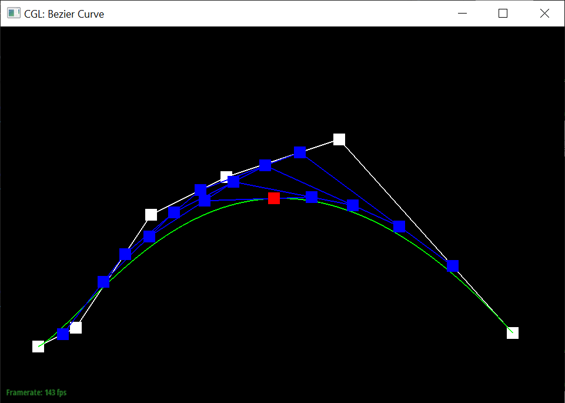
Part 2: Bezier Surfaces with Separable 1D de Casteljau
Briefly explain how de Casteljau algorithm extends to Bezier surfaces and how you implemented it in order to evaluate Bezier surfaces.
- The de Casteljau algorithm first iterate all the rows.
- For each row, we use the 2D de Casteljau algorithm to evaluate the row final points.
- We apply the 2D de Casteljau algorithm to the all row final points obtained from lase step to get the final point.
Show a screenshot of bez/teapot.bez (not .dae) evaluated by your implementation.
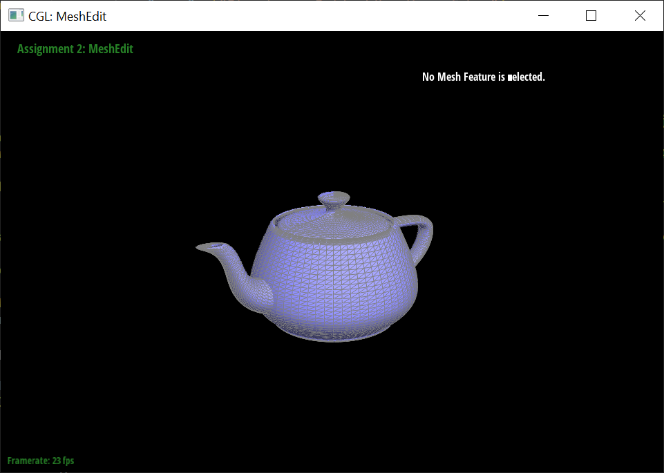
Section II: Triangle Meshes and Half-Edge Data Structure
Part 3: Area-Weighted Vertex Normals
Briefly explain how you implemented the area-weighted vertex normals.
- Looping around vertex using halfedge=halfedge->twin()->next(), get the face by halfedge->face().
- Intialize the normal_sum vector to (0, 0, 0).
- For each face, add the normal vector of the face, which is face->normal(), to the normal_sum vector.
- Using vector.unit() to normalize the normal_sum vector.
Show screenshots of dae/teapot.dae (not .bez) comparing teapot shading with and without vertex normals. Use Q to toggle default flat shading and Phong shading.
|
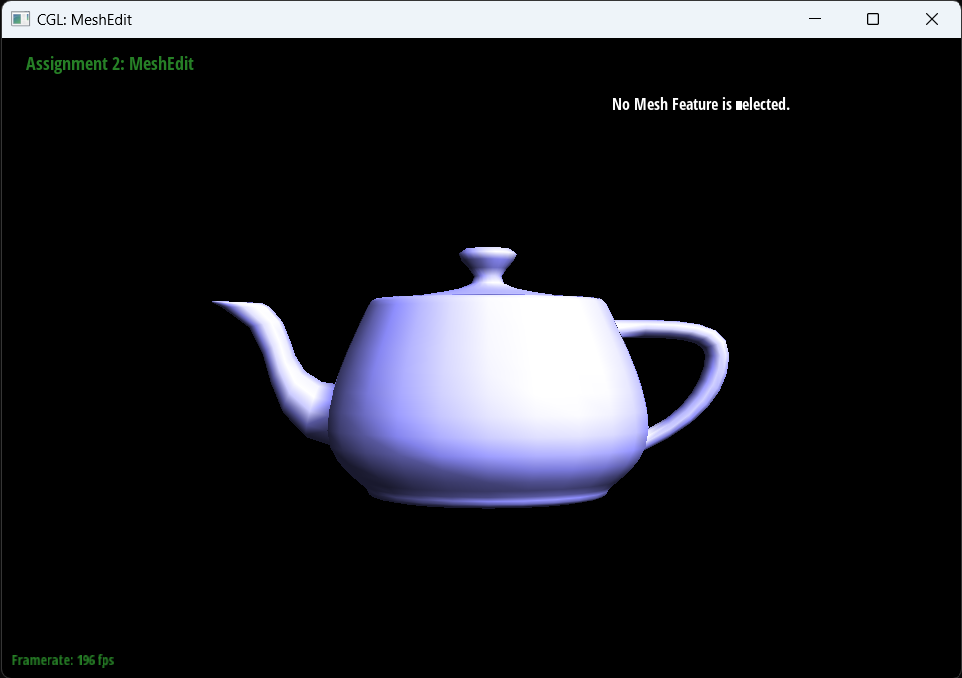
With vertex normals
|
Without vertex normals
|
Part 4: Edge Flip
Briefly explain how you implemented the edge flip operation and describe any interesting implementation / debugging tricks you have used.
- If the edge is a boundary edge, return.
- Name each edge using the example order(a,b,c,d).
- Get the six halfedges(ab,bd,dc,ca,cb,bc), the four vertexes and the two faces(abc_bda,dcb_cad) .
- Reassign the halfedges of the vertexes and the faces to their corresponding root.
- Reassign next, vertex and face of the six halfedges.
Show screenshots of the teapot before and after some edge flips.
|
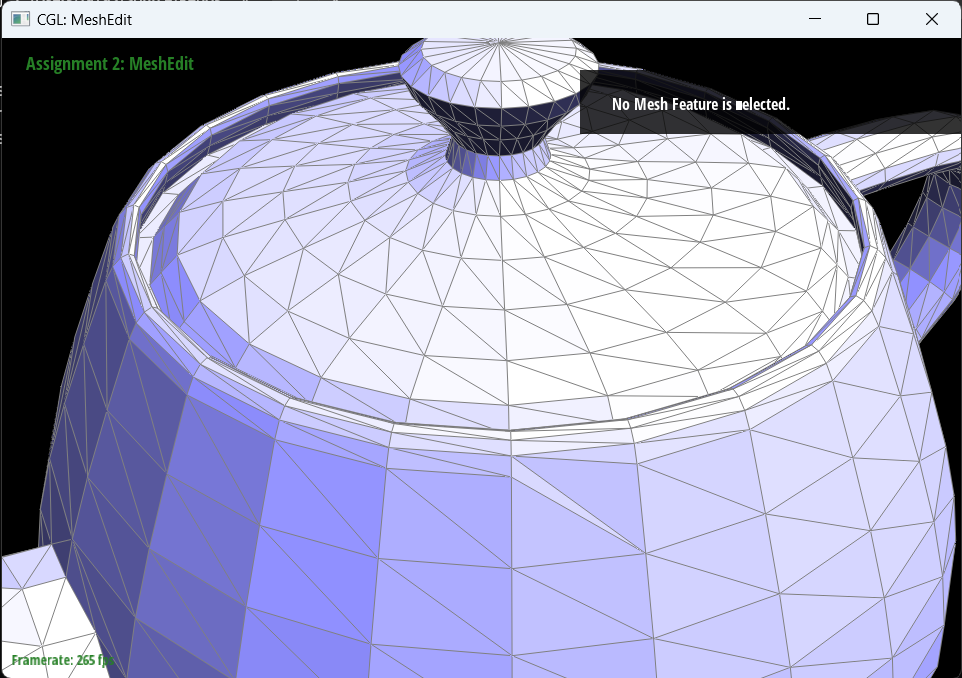
After flipping
|
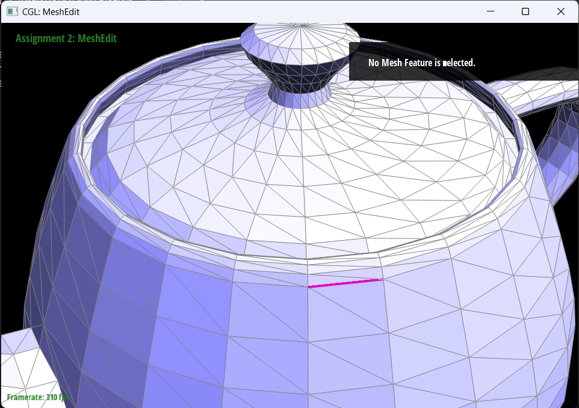
Before flipping
|
Write about your eventful debugging journey, if you have experienced one.
None.
Part 5: Edge Split
Briefly explain how you implemented the edge split operation and describe any interesting implementation / debugging tricks you have used.
- If the edge is a boundary edge, return.
- Name each edge using the example order(a,b,c,d,m).
- Get the six halfedges(ab,bd,dc,ca,cb,bc), the four vertexes and the two faces(abc_amc,dcb_dcm) .
- Create a new vertex m, two new faces(abm,bdm), three edges(am,bm,dm) and six halfedges(am,ma,bm,mb,dm,md).
- m->position=(b->position+c->position)/2
- Let bc, cb be mc, cm by the reassignment.
- Reassign all the vertexes, edges, faces and halfedges according to the splitted graph.
Show screenshots of a mesh before and after some edge splits.
|
After splitting
|
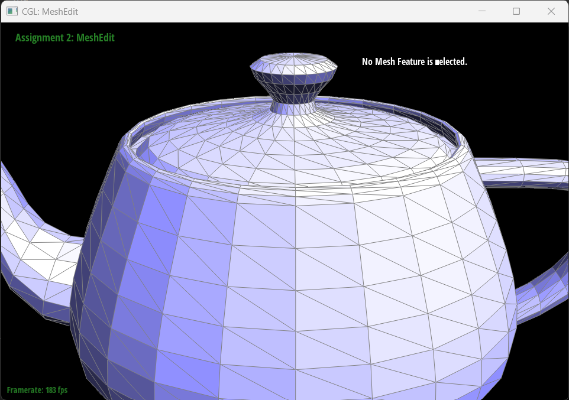
Before splitting
|
Show screenshots of a mesh before and after a combination of both edge splits and edge flips.
|
After the combination of splitting and flipping
|
Before the combination of splitting and flipping
|
Write about your eventful debugging journey, if you have experienced one.
None.
If you have implemented support for boundary edges, show screenshots of your implementation properly handling split operations on boundary edges.
None.
Part 6: Loop Subdivision for Mesh Upsampling
Briefly explain how you implemented the loop subdivision and describe any interesting implementation / debugging tricks you have used.
- For each old vertex, we calculate the new position according to new_position = (1 - n * u) * original_position + u * original_neighbor_position_sum and store it in the vertex->new_position.
- For each edge, we calculate the position of the new vertex according to 3/8 * (A + B) + 1/8 * (C + D) and store it in edge->new_position.
- For each edge, we split it and tag the splited edge as isNew. Meanwhile, we add the totaly newly created edges to the flip_edges list.
- Iterate through the flip_edges list, check whether it has one old vertex and one new vertex. If so, we flip it.
- For each old vertex, we assign the new_position to the position.
Take some notes, as well as some screenshots, of your observations on how meshes behave after loop subdivision. What happens to sharp corners and edges? Can you reduce this effect by pre-splitting some edges?
Meshes become smoother. The sharp corners and edges become smoother as well.
|
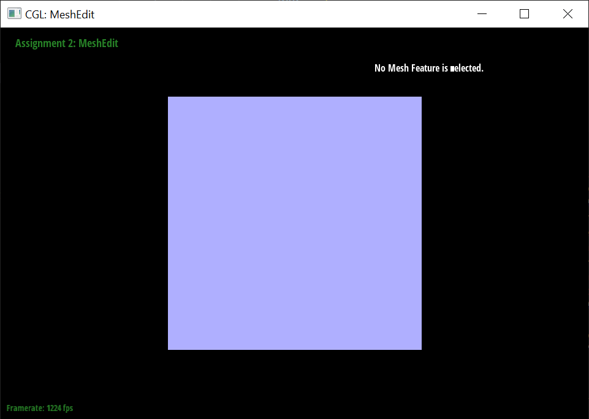
original
|
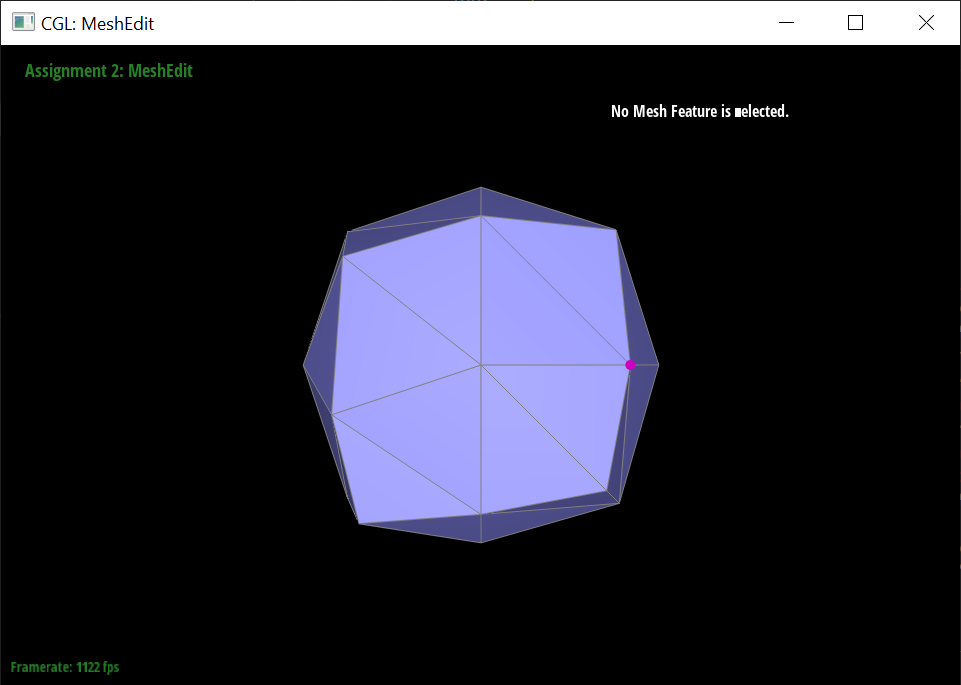
One loop subdivision
|
|
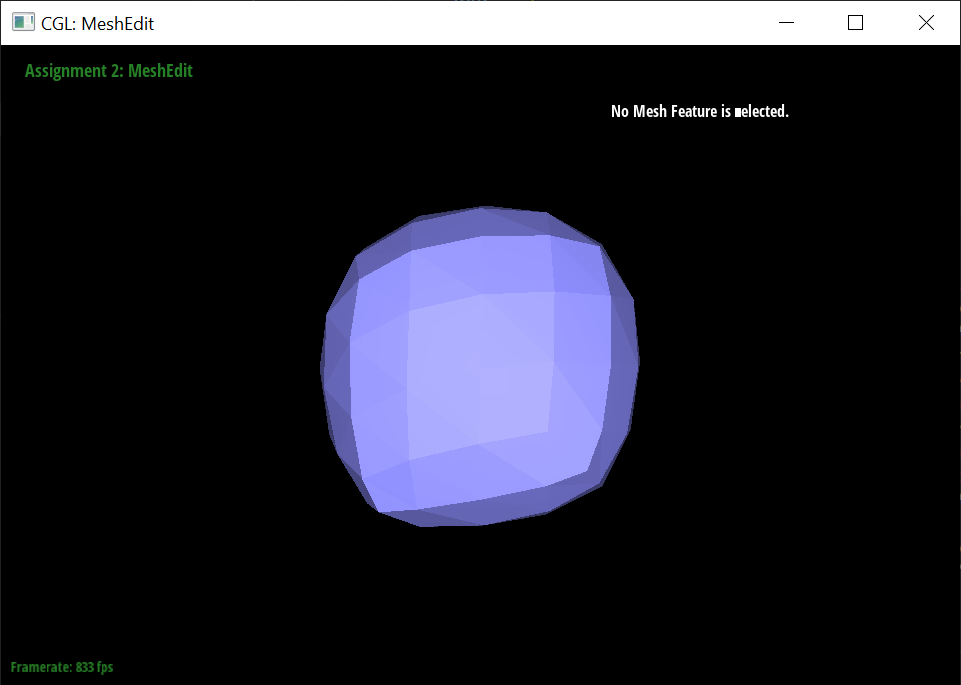
Two loop subdivision
|
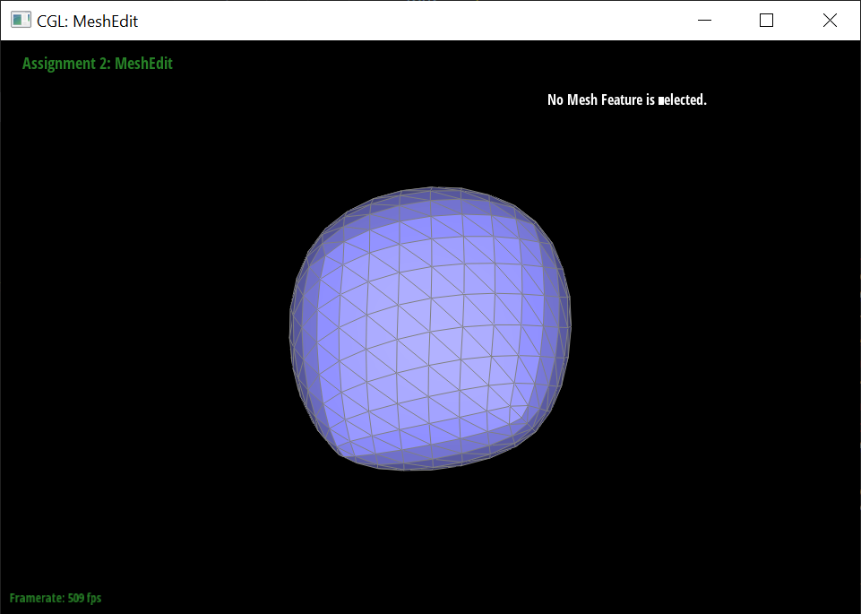
Three loop subdivision
|
We can reduce the effect by pre-splitting some edges so that the meshes are smaller near the corner.
|
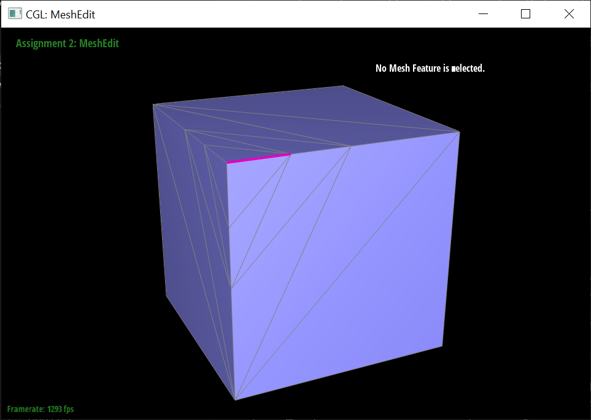
original
|
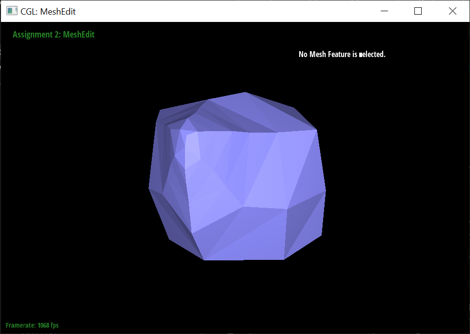
One loop subdivision with pre-splitting
|
|
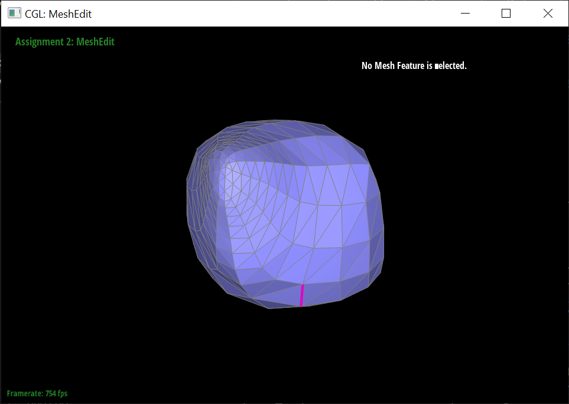
Two loop subdivision with pre-splitting
|
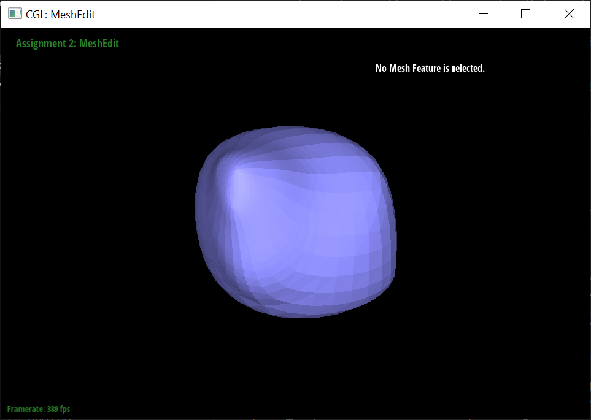
Three loop subdivision with pre-splitting
|
Load dae/cube.dae. Perform several iterations of loop subdivision on the cube. Notice that the cube becomes slightly asymmetric after repeated subdivisions. Can you pre-process the cube with edge flips and splits so that the cube subdivides symmetrically? Document these effects and explain why they occur. Also explain how your pre-processing helps alleviate the effects.
We can flip some edges of the cube so that the edges in the cube are symmetic. Therefore, the cube will subdivide symmetrically.
This effect occurs because the original cube is not symmetric.
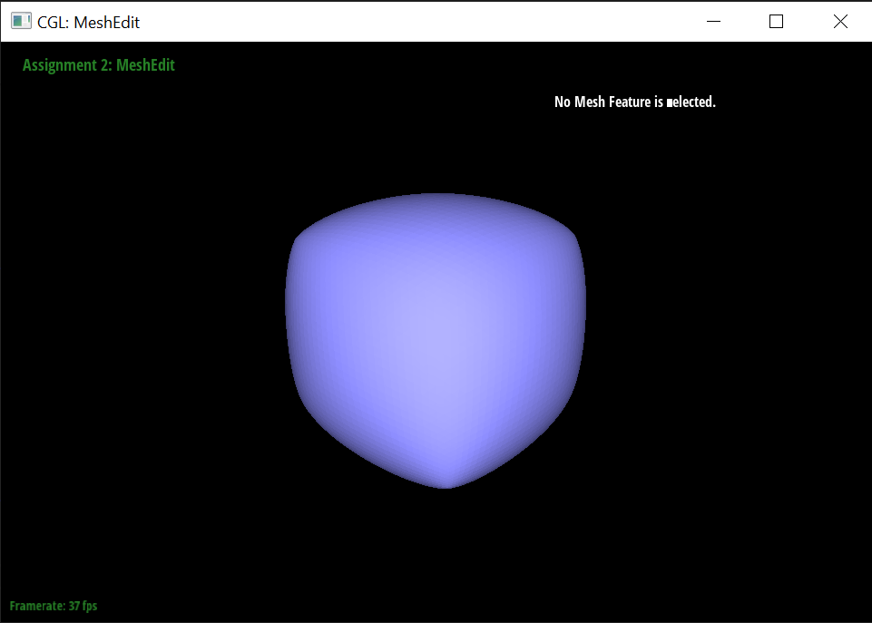
If you have implemented any extra credit extensions, explain what you did and document how they work with screenshots.
None.
Part 7 (Optional, Possible Extra Credit)
Save your best polygon mesh as partsevenmodel.dae in your docs folder and show us a screenshot of the mesh in your write-up.
YOUR RESPONSE GOES HERE
Include a series of screenshots showing your original mesh and your mesh after one and two rounds of subdivision. If you have used custom shaders, include screenshots of your mesh with those shaders applied as well.
YOUR RESPONSE GOES HERE
Describe what you have done to enhance your mesh beyond the simple humanoid mesh described in the tutorial.
YOUR RESPONSE GOES HERE